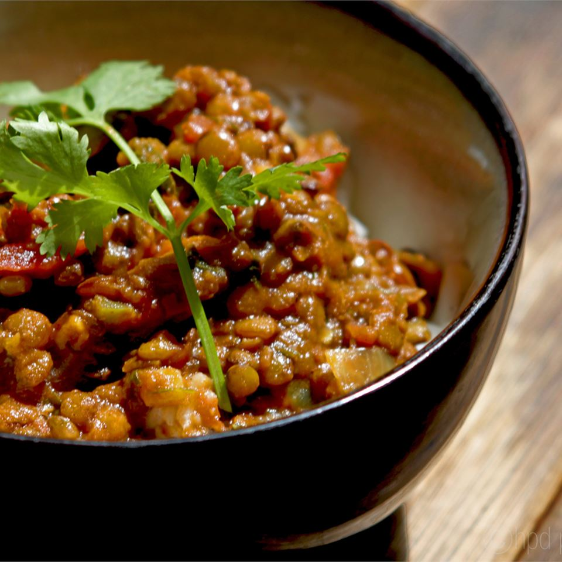

Spicy Dahl

Description
A spicy, vegetarian dish perfect for weekday meals.
This lentil based dish goes amazingly with flatbread, rice,
naan, and more.
Ingredients
- 1 cup red Lentils
- 2 tbsp minced ginger root
- 1 tsp mustard seed
- 4 tomatoes, chopped
- 3 onions, chopped
- 3 jalapeno peppers, deseeded and minced
- 1 tbsp ground cumin
- 1 tbsp ground coriander seed
- 6 cloves garlic, minced
- 2 tbsp oil
- 1 cup water
- salt to taste
Steps
- Cook lentils by boiling until lentils are soft
- In a skillet heat the oil and add mustard seed. When mustard
seeds begin to flutter, add onions, ginger, jalapenos, and garlic.
Saute until the onions and garlic are golden brown. Add
coriander and cumin. Add chopped tomatoes. Saute the mixture
until the tomatoes are well cooked.
-
Add water. Boil 6 minutes. Add cooked lentils, stirring well.
Add salt to taste, stirring well. Remove from heat and serve hot.